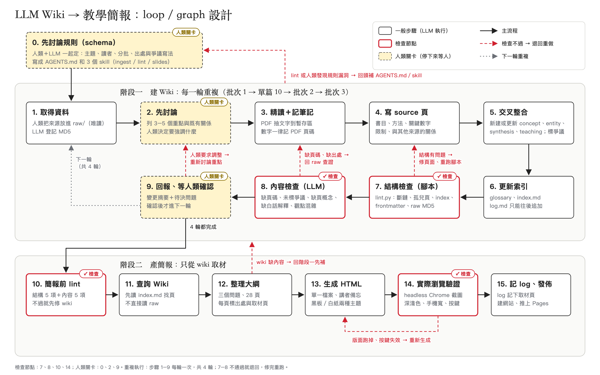

流程設計：loop / graph
一句話：取得資料 → 先討論 → 精讀 → 寫進 Wiki → 檢查（不過就退回）→ 人類確認 → 下一輪；四輪都做完，再 查 Wiki → 整理大綱 → 生成簡報 → 實際瀏覽檢查（不過就重新生成）→ 發佈。

每個節點做什麼
| # | 節點 | 誰做 | 產出／依據 |
|---|---|---|---|
| 0 | 先討論規則 | 人類＋LLM | AGENTS.md：主題、讀者深度、分三批、出處與爭議的寫法；3 個 skill |
| 1 | 取得資料 | 人類放檔、LLM 登記 | raw/（唯讀）、.raw-manifest.md5 |
| 2 | 先討論 | 人類關卡 | 列 3–5 個重點、和現有 wiki 的關係，人類決定要強調什麼 |
| 3 | 精讀＋記筆記 | LLM | PDF 抽文字到暫存區；數字一律記下 PDF 頁碼 |
| 4 | 寫 source 頁 | LLM | wiki/sources/*.md |
| 5 | 交叉整合 | LLM | concept／entity／synthesis／teaching 頁；不同來源說法不一致時寫 ⚠️ 爭議區塊 |
| 6 | 更新索引 | LLM | glossary.md、index.md、log.md |
| 7 | 結構檢查 | 腳本 | lint.py 5 項：斷鏈、孤兒頁、index 不一致、frontmatter、raw 完整性 |
| 8 | 內容檢查 | LLM 判讀 | 5 項：數字缺頁碼、爭議未標、缺頁概念、缺白話解釋、觀點混雜 |
| 9 | 回報、等確認 | 人類關卡 | 變更摘要與待決問題；人類確認才進下一輪 |
| 10 | 簡報前 lint | 腳本＋LLM | 同 7–8，當作進入簡報的門檻 |
| 11 | 查詢 Wiki | LLM | 先讀 index.md 找頁，再讀頁面；不直接讀 raw |
| 12 | 整理大綱 | LLM | 三個問題、28 頁；每頁標出處 |
| 13 | 生成 HTML | LLM | output/recsys-slides.html（單一檔案、講者備忘、兩種主題） |
| 14 | 實際瀏覽驗證 | headless Chrome | 截圖檢查深色、淺色、手機寬度；模擬按鍵；看 console |
| 15 | 記 log、發佈 | LLM | log 記下取材頁；tools/build_site.py 建網站，推上 GitHub Pages |
哪些步驟會重複執行？
- 步驟 1–9 是一個 loop，總共跑了 4 輪：批次 1（4 份工業界技術）→ 單篇 10（TikTok 官方說明頁）→ 批次 2（2 份生成式推薦）→ 批次 3（3 份社會影響研究）。每一輪都會回頭更新前幾輪寫好的頁面，例如批次 3 改寫了批次 1 建立的 過濾泡泡。
- 步驟 7–8（lint）每輪都跑，產簡報前再跑一次（步驟 10）。總共跑了 6 次。
- 步驟 13–14 是簡報的小 loop：生成 → 截圖檢查 → 有問題就改 → 再截圖，直到 28 頁在三種顯示條件下都正常。
哪些地方需要檢查或重新生成？
| 檢查點 | 抓什麼 | 不通過時退回到 |
|---|---|---|
| 7 結構檢查 | 斷鏈、孤兒頁、index 漏列、frontmatter 缺欄位、raw 檔被改 | 4–6 修頁面，重跑腳本 |
| 8 內容檢查 | 數字沒有頁碼、說法衝突沒標爭議、wiki 觀點混進來源主張 | 3 回 raw 查頁碼，再改頁面 |
| 9 人類確認 | 重點放錯、語氣不對、需要人判斷的爭議 | 2 重新討論 |
| 10 簡報前 lint | 同 7–8 | 先修 wiki，不在簡報裡打補丁 |
| 12 整理大綱 | 想講的內容 wiki 裡沒有 | 回階段一先補 wiki |
| 14 瀏覽驗證 | 版面溢出、文字重疊、翻頁或備忘失效 | 13 重新生成 |
| 0 規則回饋 | 同一種錯誤一再出現 | 回頭修 AGENTS.md 或 skill |
為什麼這樣設計？
- 分批，而不是一次讀 10 篇：一次全讀，LLM 容易把不同論文的數字混在一起，錯了也很難找出是哪一篇。分批後每輪只處理 2–4 份，lint 抓到問題可以馬上回到那幾份原文查。
- 檢查放在每一輪的尾巴，而不是最後才查：wiki 是一層層往上蓋的，批次 2、3 會引用批次 1 寫的頁。錯誤如果留到最後，會被後面的頁面複製好幾次。
- 結構交給腳本，內容交給 LLM：斷鏈、frontmatter 這類問題有標準答案，腳本每次都抓得到、不會累；「這個數字有沒有出處」「這是來源的說法還是我們的推論」需要讀懂內容，才交給 LLM 判斷。
- 兩個人類關卡：重點要放哪裡、語氣要多有趣、爭議怎麼下結論，這些沒有標準答案，由人決定。實際上人類也在這裡改了方向（見執行紀錄）。
- 簡報只從 wiki 取材：簡報上每一句話都能追回 wiki 頁，wiki 頁再追回原文頁碼，形成「簡報 → wiki → raw」的鏈。wiki 缺什麼就先補 wiki，知識庫才會跟著簡報一起變完整。
- 最後一定要實際打開來看：HTML 簡報的錯（字太長溢出、圖表標籤重疊）讀原始碼看不出來，必須截圖。
說明：批次 1–3 的「先討論」，是在步驟 0 一次定好每批讀哪些、重點放在哪，再加上步驟 9 每批結束的確認；單篇 10 則是先跑步驟 2，跟人類討論 5 個重點，才開始寫。